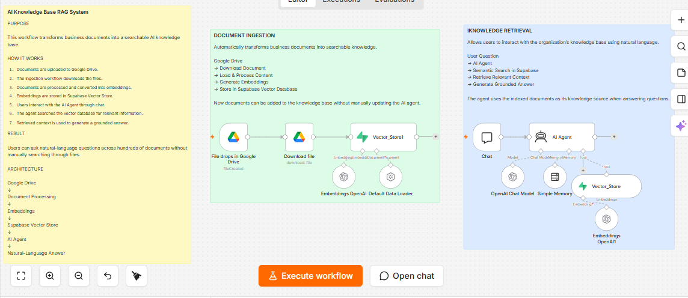

AI KNOWLEDGE SYSTEM
AI-Powered Company Knowledge Base
A Retrieval-Augmented Generation system that turns business documents into a conversational knowledge layer. Users can ask natural-language questions instead of manually hunting through folders and SOPs.
View full case study →